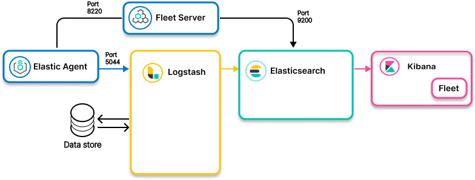

Elastic Agent to Logstash (for enrichment) to Elasticsearchedit

- Ingest models
-
- Elastic Agent to Elasticsearch using Logstash to enrich the data
- Elastic Agent to Logstash for enrichment based on fields in the Elastic Agent data to Elasticsearch
- Use when
-
- Data enrichment in Elasticsearch is not practical for business or technical reasons
- Your use case requires data enrichment based on fields in the Elastic Agent data. Logstash can collect enrichment data based on those fields, and then send the data to Elasticsearch.
- Examples
-
- Data that changes frequently and is updated using an external source, such as stock ticker data
- Enrichment data is proprietary and cannot be stored elsewhere.
-
Enrichment is done with an HTTP API whose return depends on values from the document.
Example: An API that takes geo points with the collected data and returns available real estate in the region, and then passes to Logstash enrichment for enrichment between agents and Elasticsearch.
Resourcesedit
Info on configuring Elastic Agent:
For info on Logstash for enriching data, check out these sections in the Logstash Reference:
Info on Elasticsearch: